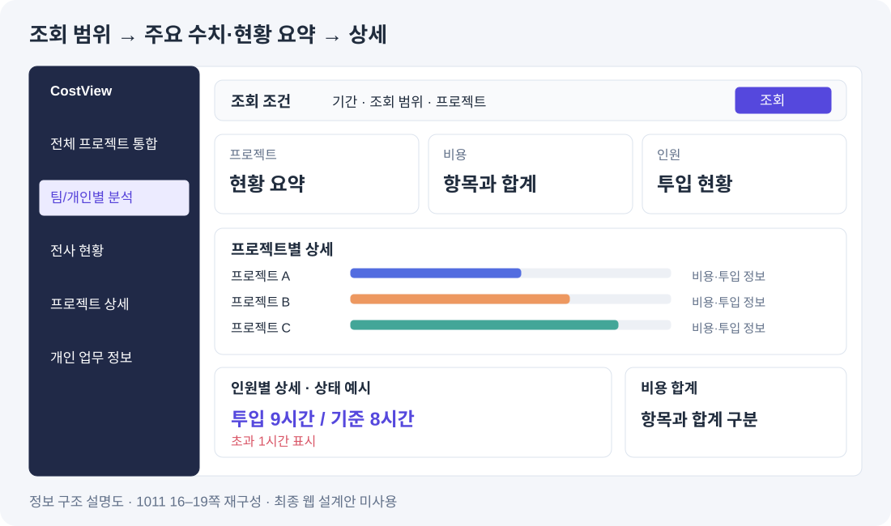

01 / MULTI-USER PLATFORM · INFORMATION ARCHITECTUREUX/UI

지도와 업무 자료를 연결한
통합 관리 플랫폼.
현장·본사·외부 사용자의 확인 목적을 정리하고, 공통 메뉴에서 지도와 관련 자료를 이어서 탐색하도록 구성했습니다.
- 문제
- 파일·프로그램에 나뉜 현장 자료
- 결정
- 업무 단위 공통 메뉴와 지도 기반 탐색
- 담당
- 사용자 목적 정리 · 공통 메뉴 IA · 지도 탐색 UI · 퍼블리싱
SELECTED WORK / 01—04
배포된 플랫폼과 현장 기록,
ERP 설계와 공통 UI 재사용 경험입니다.
현장·본사·외부 사용자의 확인 목적을 정리하고, 공통 메뉴에서 지도와 관련 자료를 이어서 탐색하도록 구성했습니다.

웹은 기록 입력·보관을, 모바일은 현장 작성을 지원하도록 일지 확인 항목과 서명 저장 화면을 설계했습니다.

조회 조건에서 주요 수치와 상세 내역으로 이어지는 웹 UI를 설계·퍼블리싱했습니다. PDF 제공으로 변경되어 웹 설계안은 최종 미사용입니다.

SCSS 컬러 변수와 입력·검색 상태를 웹 가이드로 정리하고, 컬러와 일부 UI 요소를 디자인·프론트 작업에 재사용했습니다.
HOW I CONTRIBUTE
MORE WORK / 05—10
팀 내부 모바일 설계와 개인 프로토타입,
그 밖의 웹·앱 설계 경험입니다.

05 · TEAM PROJECT · MOBILE WORKFLOW
팀 프로젝트 · 미배포 · 팀 내부 설계·구현 확인 · 회의실 예약·근태 신청 모바일 화면의 기획·UI·퍼블리싱 참여

06 · PERSONAL PROJECT · AI-ASSISTED PROTOTYPE
개인 프로젝트 · 프로토타입 · 보드 UI · 카드 이동 · 작업 생성 프로토타입

07 · RESPONSIVE WEB · UI RENEWAL
업무 프로젝트 · 반응형 웹 설계 · 제품 탐색 구조 · 반응형 화면 · UI 규칙 설계

08 · B2B PLATFORM · FIELD DATA
업무 프로젝트 · 웹·앱 설계·퍼블리싱 · 현장 측정 흐름 · 웹·앱 UI · 퍼블리싱

09 · WEB UX · BRAND UX · RESPONSIVE
업무 프로젝트 · 반응형 웹 설계 · IA · 브랜드 메시지 · UI 설계 · 퍼블리싱 참여

10 · B2C · HABIT UX
개인 프로젝트 · 설계 진행 중 · 건강 기록 흐름 · 브랜드 · 모바일 UI 설계
ABOUT / 이한울
웹디자인과 퍼블리싱으로 시작해, B2B 제품의 정보 구조와 업무 흐름으로 설계 범위를 넓혔습니다.
현장·본사·외부 사용자의 자료 확인 목적을 정리하고, 필요한 정보와 다음 행동이 연결되도록 화면을 설계합니다.
정보 구조 / 화면 흐름 · UI Design · Figma · HTML / CSS / SCSS · JavaScript · Photoshop · Git
포트폴리오 PDFLET’S WORK TOGETHER
UX/UI · Product Designer / B2B · 업무 플랫폼